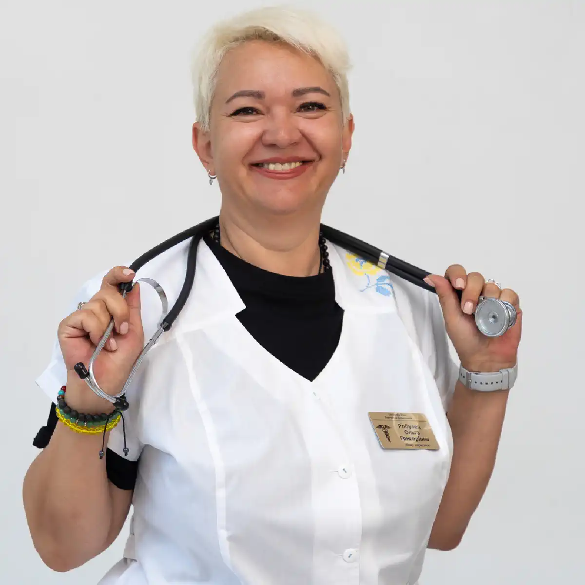

+38(068) 79 72 782
+38(068) 79 72 782Крапельниця від наркотиків Одеса
Швидкий старт до тверезого життя та повного відновлення


Безкоштовна консультація, працюємо цілодобово 24/7
Швидкий старт до тверезого життя та повного відновлення
Крапельниця від наркотиків — це сучасний та ефективний метод медичної допомоги при наркотичній інтоксикації й абстинентному синдромі. Процедура спрямована не лише на механічне виведення токсинів, а й на комплексну стабілізацію роботи всіх життєво важливих систем організму, які страждають від впливу психоактивних речовин. Під час уживання наркотиків порушується водно-електролітний баланс, виснажуються запаси вітамінів і мікроелементів, страждає нервова та серцево-судинна система, тому самостійно впоратися з таким станом організм часто не в змозі.
Головна мета крапельниці від наркотиків — допомогти людині безпечно пережити ломку, зняти тяжку інтоксикацію та повернути фізичні сили, необхідні для початку повноцінного лікування залежності. Уже під час інфузійної терапії зменшуються болі в м’язах і суглобах, знижується вираженість ознобу, тривоги й панічних реакцій, нормалізуються тиск, пульс і дихання. Пацієнт починає почуватися стабільніше, з’являється можливість спокійно спати, приймати їжу та контактувати з лікарем. Процедура проводиться суворо під контролем нарколога або анестезіолога. Перед початком лікування спеціаліст оцінює загальний стан пацієнта, рівень свідомості, показники тиску та пульсу, наявність хронічних захворювань і тип уживаної речовини. Під час інфузії лікар постійно моніторить стан пацієнта, коригує швидкість введення розчинів і склад препаратів, що особливо важливо при тяжкій ломці або змішаній інтоксикації.
Крапельниця від наркотиків не є самостійним лікуванням наркозалежності, але відіграє ключову роль на першому етапі допомоги. Вона знижує ризик небезпечних ускладнень, полегшує стан і готує організм до подальшої терапії — медикаментозної підтримки, психотерапії та реабілітації. Своєчасно проведена детоксикація дозволяє людині пережити найтяжчий період відмови від наркотиків і зробити перший, але вкрай важливий крок до одужання.
За відсутності своєчасної медичної допомоги наркотична інтоксикація може призвести до незворотних наслідків. На тлі токсичного впливу нерідко розвиваються пригнічення дихального центру, гостра серцево-судинна недостатність, набряк головного мозку, порушення свідомості аж до коми. Особливо небезпечні стани передозування опіоїдами, синтетичними речовинами та поєднання кількох наркотиків або наркотиків з алкоголем — такі випадки багаторазово підвищують ризик летального наслідку. Важливо розуміти, що організм у стані інтоксикації не здатний самостійно нейтралізувати небезпечні речовини. Будь-які спроби «перечекати», викликати блювання, дати таблетки або використовувати народні методи не лише неефективні, а й можуть погіршити ситуацію. Саме тому за перших ознак тяжкої інтоксикації необхідний терміновий виклик лікаря-нарколога або бригади екстреної медичної допомоги.
Професійна медична допомога включає негайну оцінку життєвих функцій, стабілізацію дихання та серцевої діяльності, а також проведення інфузійної терапії. Крапельниця від наркотиків дозволяє прискорити виведення токсинів, відновити водно-електролітний баланс, захистити печінку та нирки, знизити навантаження на серце й зменшити вираженість психоневрологічних симптомів. Лікар підбирає склад препаратів суворо індивідуально, враховуючи вид речовини, тяжкість стану та наявність супутніх захворювань. Своєчасне втручання не лише рятує життя, а й значно знижує ризик довгострокових ускладнень — від стійких порушень психіки до хронічних уражень внутрішніх органів. Саме тому наркотична інтоксикація завжди розглядається як невідкладний стан, що потребує професійного й негайного медичного втручання.
Клінічна картина передозування може відрізнятися залежно від виду наркотика (опіоїди, стимулятори, синтетичні речовини, седативні препарати), однак у всіх випадках ідеться про пряму загрозу життю. Небезпека посилюється тим, що багато наркотиків мають відстрочену дію або вживаються в поєднанні з алкоголем і лікарськими засобами. У таких ситуаціях стан може різко погіршитися навіть тоді, коли спочатку людині здається, що «потрібно просто відлежатися». Особливо підступні опіоїдні передозування (героїн, метадон, налбуфін), за яких пригнічується дихальний центр. Людина може заснути й непомітно перестати дихати. Стимулятори (амфетаміни, кокаїн, «солі») частіше спричиняють різкий стрибок тиску, гіпертермію, судомний синдром і гостру серцеву недостатність. Синтетичні та дизайнерські наркотики непередбачувані за дією, оскільки їх склад часто змінюється, а реакція організму може бути блискавичною.
Без медичного втручання передозування призводить до тяжких наслідків: набряку мозку, незворотних неврологічних порушень, ураження печінки та нирок, коми й летального наслідку. Навіть якщо людина прийшла до тями самостійно, це не означає, що небезпека минула — токсичне ушкодження внутрішніх органів може прогресувати приховано. Медична допомога при передозуванні спрямована на негайну стабілізацію життєво важливих функцій: відновлення дихання та кровообігу, введення антидотів (при опіоїдній інтоксикації), детоксикацію, корекцію електролітних порушень і захист мозку від гіпоксії. Крапельниця від наркотиків у таких випадках стає не просто підтримкою, а життєво необхідною процедурою.
За підозри на передозування не можна чекати й спостерігати. Кожна хвилина зволікання підвищує ризик незворотних наслідків. Терміновий виклик лікаря — єдиний правильний крок, здатний урятувати життя та запобігти трагічному фіналу.
Крапельниця від наркотиків — це основний і найбільш ефективний метод детоксикації, що застосовується при інтоксикації психоактивними речовинами та вираженому абстинентному синдромі. Процедура проводиться суворо під контролем лікаря-нарколога з медичною освітою та досвідом роботи із залежними пацієнтами. Лікарські розчини вводяться внутрішньовенно крапельно, що дозволяє активним компонентам миттєво потрапляти в кровотік, минаючи шлунково-кишковий тракт, який нерідко страждає при вживанні наркотиків. Такий спосіб введення забезпечує швидку терапевтичну дію, рівномірний розподіл препаратів у тканинах і більш передбачуваний клінічний ефект. Головне завдання крапельниці від наркотиків — у найкоротші строки очистити організм від токсинів і продуктів розпаду речовин, відновити водно-електролітний баланс, підтримати роботу серця, печінки, нирок і нервової системи, а також знизити тяжкі прояви наркотичної ломки. Під час процедури лікар контролює основні життєві показники пацієнта: артеріальний тиск, частоту пульсу та дихання, рівень насичення крові киснем, загальний неврологічний і психоемоційний стан. За потреби склад крапельниці коригується в процесі інфузії, що робить лікування максимально безпечним.
Уже після першої процедури більшість пацієнтів відчувають виражене полегшення. Знижується тривожність і внутрішнє напруження, зменшується пітливість, минає відчуття «розриваючого» серцебиття, слабшають болі в м’язах і суглобах, зникає тремтіння та сильна слабкість. Поступово нормалізується сон, з’являється здатність спокійно лежати й відпочивати, знижується нав’язливе бажання негайно прийняти чергову дозу речовини. Через 20–30 хвилин після початку інфузії пацієнти часто відзначають ясність у голові, відчуття стабільності та полегшення, повернення контролю над своїм станом. Важливо розуміти, що крапельниця від наркотиків — це не разовий «засіб від залежності», а екстрений і необхідний етап медичної допомоги. Вона дозволяє безпечно пережити гострий період інтоксикації або ломки, запобігти небезпечним ускладненням (судоми, аритмії, різкі перепади тиску, психози) та підготувати організм до подальшого лікування. Після стабілізації стану лікар зазвичай рекомендує наступний крок: продовження детоксикації курсом, медикаментозну підтримку, психотерапію та реабілітаційні програми.
Крапельниця від наркотиків — це перший, але вкрай важливий крок на шляху до відновлення здоров’я та повернення до тверезого життя. Своєчасне звернення по медичну допомогу значно підвищує шанси на успішне лікування залежності й допомагає уникнути тяжких, а подекуди незворотних наслідків уживання психоактивних речовин.
Крапельниця від наркотиків — це перший і найважливіший крок до повернення здоров’я, тверезості та внутрішньої рівноваги. Уже через 20–30 хвилин після початку процедури пацієнт відчуває помітне полегшення: знижується внутрішнє напруження, зменшується тривожність, прояснюється свідомість, поступово повертаються фізичні сили й відчуття контролю над власним станом. Це особливо важливо в період ломки або після інтоксикації, коли організм перебуває у стані серйозного стресу та виснаження. Склад крапельниці підбирається суворо індивідуально — лікар-нарколог враховує вид уживаної речовини, тривалість залежності, вираженість абстинентного синдрому, загальний стан здоров’я, вік пацієнта та наявність супутніх захворювань. Такий персональний підхід дозволяє не просто полегшити симптоми, а дійсно допомогти організму відновитися безпечно та ефективно. Використовуються лише перевірені, клінічно обґрунтовані препарати, що добре поєднуються між собою й дають прогнозований результат. Основні компоненти крапельниці від наркотиків:
За потреби лікар доповнює крапельницю анальгетиками, протиблювотними, спазмолітичними або протисудомними засобами, щоб максимально полегшити стан пацієнта й запобігти розвитку ускладнень. Упродовж усієї процедури спеціаліст контролює тиск, пульс, дихання та загальне самопочуття, за потреби коригуючи лікування. Крапельниця від наркотиків не є «разовим рішенням», але вона дає організму шанс вийти з гострого стану, стабілізуватися та підготуватися до наступного етапу — повноцінного лікування залежності, психотерапії та реабілітації. Це надійна медична допомога, яка допомагає зробити перший, найскладніший крок до одужання.
Вартість крапельниці від наркотиків в Одесі починається від 2499 грн.
Детоксикація від наркотиків — це не просто крапельниця, а повноцінний комплекс медичних заходів, спрямованих на повне очищення організму, зняття абстинентного синдрому (ломки) та стабілізацію психоемоційного стану пацієнта. Основна мета процедури — максимально безпечно вивести токсини, відновити роботу життєво важливих органів, нормалізувати обмін речовин і повернути людині фізичну та ментальну ясність. Детоксикація проводиться в умовах клініки, амбулаторно або з виїздом нарколога додому — вибір залежить від тяжкості стану, виду уживаної речовини та наявності супутніх захворювань. Важливо розуміти, що кожен день залежності посилює руйнівний вплив наркотиків на організм: страждають печінка, нирки, серце, нервова система, порушується робота мозку та психоемоційна рівновага. Своєчасне звернення до спеціаліста дозволяє запобігти небезпечним ускладненням, прискорити відновлення та знизити ризик тривалих наслідків. Етапи медичної детоксикації від наркотиків:
Детоксикація від наркотиків — це перший і вкрай важливий крок на шляху до відновлення здоров’я, стабілізації психіки та повернення контролю над життям. Професійний підхід, індивідуальний підбір лікарських засобів і постійний контроль лікаря забезпечують максимальну безпеку, ефективність процедури та комфорт пацієнта на всіх етапах лікування.
Кожен вид наркотика має специфічний вплив на організм, уражаючи центральну нервову систему, серцево-судинну систему, печінку, нирки й обмін речовин. Тому склад крапельниці для детоксикації підбирається суворо індивідуально з урахуванням виду речовини, тривалості вживання, вираженості абстинентного синдрому та супутніх захворювань. Правильно складена інфузійна терапія забезпечує швидке очищення організму, полегшення ломки, стабілізацію життєво важливих функцій і створення умов для подальшого відновлення.
Метадон є сильнодіючим опіоїдом і викликає тяжку фізичну залежність, що робить абстинентний синдром особливо вираженим і тривалим. Ломка при метадоновій інтоксикації супроводжується сильним болем у м’язах і суглобах, порушеннями сну, зниженням апетиту, різкою слабкістю, тривогою та дратівливістю. Крапельниці при інтоксикації метадоном спрямовані на комплексне відновлення організму.
Після правильно підібраної крапельниці пацієнт відзначає помітне поліпшення стану вже через 20–40 хвилин: зменшується біль у тілі, зникають тремтіння та нудота, повертаються сила й життєвий тонус, нормалізується настрій. Процедура не лише полегшує фізичні симптоми ломки, а й створює необхідні умови для подальшої реабілітації — відновлення режиму, харчування, психологічної підтримки та планування лікування залежності. Регулярне спостереження нарколога під час і після крапельниці забезпечує безпеку, дозволяє коригувати терапію залежно від реакції організму та мінімізувати ризики ускладнень. Такий процес виходу з абстиненції є максимально комфортним, швидким і ефективним.
Кокаїн спричиняє сильне психомоторне збудження, тахікардію, різке підвищення артеріального тиску та значне навантаження на серце й судини. На тлі інтоксикації нерідко з’являються тривожність, панічні стани, безсоння, тремтіння та підвищене потовиділення. Тривале або повторюване вживання кокаїну може призводити до хронічного стресу для серцево-судинної системи, інсультів, інфарктів, порушення роботи печінки та нирок, а також психічних розладів. Інфузійна терапія при інтоксикації кокаїном спрямована на комплексне відновлення організму та стабілізацію життєвих показників.
Після правильно проведеної крапельниці у пацієнта спостерігається значне поліпшення: знижується тривожність, нормалізується серцебиття, падає тиск, відновлюються сон і апетит, зникають тремтіння та фізична слабкість. Процедура створює необхідні умови для подальшої реабілітації — відновлення обміну речовин, роботи серця та нервової системи, а також для психотерапевтичної підтримки, що допомагає знизити ризик рецидиву та закріпити тверезість. Регулярне спостереження нарколога під час і після інфузії забезпечує безпеку, дозволяє коригувати склад крапельниці залежно від реакції організму та запобігає розвитку ускладнень. Усе це в комплексі робить процес детоксикації при кокаїновій інтоксикації максимально ефективним і безпечним.
Амфетамін має сильну стимулювальну дію на центральну нервову систему, викликаючи підвищену активність, збудження, безсоння та емоційні перепади. Часте або значне вживання виснажує організм, порушує обмін речовин, спричиняє зневоднення, тремор, тахікардію, підвищення тиску та підвищене навантаження на серце й нирки. На тлі інтоксикації можуть з’являтися панічні атаки, дратівливість, відчуття тривоги й агресія. Інфузійна терапія при інтоксикації амфетаміном спрямована на комплексне відновлення організму та нормалізацію психоемоційного стану.
Після проведення крапельниці пацієнти відзначають значне полегшення: зменшуються тремор, тахікардія та пітливість, нормалізуються тиск і пульс, повертається сон, стабілізується настрій і емоційний фон. Інфузійна терапія дозволяє безпечно зняти симптоми абстинентного синдрому, відновити водно-електролітний баланс, поліпшити роботу серця та нервової системи. Для повного закріплення ефекту після процедури лікар-нарколог розробляє індивідуальний план реабілітації, що включає вітамінотерапію, психологічну підтримку та за потреби подальший медикаментозний супровід. Наш підхід знижує ризик рецидиву, дозволяє організму швидше відновитися та забезпечує безпеку пацієнта на всіх етапах детоксикації.
ЛСД та інші психоделіки мають виражений вплив на центральну нервову систему, спричиняючи порушення сприйняття, галюцинації, дезорієнтацію в просторі й часі, тривожні розлади, панічні атаки та підвищену чутливість до зовнішніх подразників. На тлі інтоксикації можливі порушення сну, тахікардія, стрибки тиску та виражене психоемоційне напруження.
Інфузійна терапія забезпечує комплексне очищення організму, зменшує симптоми інтоксикації та стабілізує роботу серцево-судинної й нервової систем. Уже через 20–30 хвилин після початку процедури пацієнти відзначають: зменшення тривоги, зниження психомоторного збудження, нормалізацію серцевого ритму та тиску, відновлення орієнтації й ясності мислення. Після завершення крапельниці лікар-нарколог розробляє індивідуальний післяпроцедурний план, що включає рекомендації щодо харчування, гідратації, вітамінотерапії та психологічної підтримки. Це дозволяє закріпити результат, знизити ризик повторного загострення та прискорити відновлення організму, повертаючи пацієнтові відчуття безпеки, стабільності й контролю над своїм станом.
Синтетичні стимулятори, відомі як «солі» або дизайнерські наркотики, мають надзвичайно сильний вплив на центральну нервову систему. Вони часто спричиняють гострі психотичні епізоди, виражену агресію, параною, галюцинації, безсоння та глибоку тривожність. Одночасно спостерігаються стрибки артеріального тиску, тахікардія, зневоднення та порушення обміну електролітів, що створює серйозне навантаження на серце, нирки й печінку.
Процедура крапельниці дозволяє помітно знизити психоемоційне напруження, зменшити агресивні й тривожні прояви, стабілізувати роботу серця та нормалізувати тиск. Після завершення інфузії лікар-нарколог розробляє індивідуальний план післяпроцедурного відновлення: рекомендації щодо харчування, гідратації, прийому вітамінів, а за потреби — психологічну підтримку та подальшу терапію залежності. Такий комплексний підхід забезпечує безпечне й поступове відновлення організму, мінімізує ризик повторних психозів і ускладнень, а також допомагає пацієнтові повернути контроль над своїм станом і адаптуватися до нормального життя.
Зловживання прегабаліном часто супроводжується вираженою сонливістю, втратою координації, сплутаністю свідомості, запамороченням і порушенням уваги. У пацієнтів може спостерігатися слабкість, нудота, різкі коливання настрою та підвищена дратівливість. За тривалого вживання розвивається накопичувальна інтоксикація, що серйозно впливає на роботу печінки, нирок і серцево-судинної системи.
Уже після початку крапельниці пацієнти відзначають значне полегшення: зменшуються запаморочення та слабкість, нормалізуються тиск і пульс, стабілізується емоційний стан, повертається ясність мислення й координація рухів. Після процедури лікар-нарколог розробляє індивідуальний план відновлення, що включає рекомендації щодо харчування, водного режиму, додаткових вітамінів і, за потреби, психологічну підтримку. Усе це забезпечує не лише швидке зняття симптомів інтоксикації, а й комплексне відновлення організму, знижує ризик ускладнень і створює базу для подальшої реабілітації та профілактики повторного зловживання.
Налбуфін — це потужний опіоїдний анальгетик, при зловживанні яким швидко розвивається фізична та психологічна залежність. Пацієнти часто стикаються з такими симптомами, як слабкість, запаморочення, порушення координації, сплутаність свідомості, нудота, пітливість і різкі перепади настрою. Тривале вживання налбуфіну спричиняє накопичувальну інтоксикацію, що негативно впливає на роботу печінки, нирок, серцево-судинної та нервової системи. Крапельниця при інтоксикації налбуфіном спрямована на комплексне відновлення організму.
Одразу після початку крапельниці від налбуфіну пацієнт відзначає значне полегшення: знижується біль, зникають тремтіння й тривога, стабілізуються тиск і пульс, повертається ясність свідомості та працездатність. Після процедури лікар-нарколог підбирає рекомендації щодо подальшого відновлення: корекція харчування, водного режиму, додаткова вітамінотерапія та, за потреби, психотерапевтична підтримка. Комплексне лікування дозволяє не лише зняти гострі прояви інтоксикації, а й створити безпечні умови для поступового виходу з залежності, знижуючи ризик рецидиву та забезпечуючи фізичне й психічне відновлення пацієнта.
МДМА (екстазі) спричиняє виражене зневоднення, перегрів організму, тахікардію, різкі стрибки артеріального тиску та підвищене навантаження на печінку й нирки. Тривале або інтенсивне вживання може призводити до порушення терморегуляції, судом, колапсів, психічних розладів і різкого виснаження організму. Крапельниця при інтоксикації МДМА спрямована на комплексне відновлення життєво важливих функцій організму. Детоксикація від МДМА проводиться під суворим контролем лікаря-нарколога з постійним моніторингом пульсу, тиску, насичення крові киснем і стану психіки. Уже через 20–30 хвилин після початку процедури пацієнт відзначає значне полегшення: знижується тривога, зникають тремтіння й нудота, нормалізується температура тіла, стабілізуються тиск і серцевий ритм.
Після завершення інфузійної терапії лікар розробляє індивідуальну програму відновлення: підтримка водного та вітамінного балансу, харчування, корекція сну, за потреби психотерапія та спостереження за психоемоційним станом. Такий комплексний підхід дозволяє безпечно подолати гостру інтоксикацію, відновити ясність свідомості та повернути контроль над тілом і емоціями, мінімізуючи ризик ускладнень і рецидивів.
Ефективність крапельниці від наркотиків зумовлена її прямим впливом на організм через вену, що забезпечує миттєве потрапляння активних речовин у кровотік, минаючи шлунково-кишковий тракт і печінку. Такий спосіб введення дозволяє досягти високої біодоступності препаратів — усі компоненти працюють одразу, без втрат, і чинять комплексний вплив на організм. На відміну від пероральних форм — таблеток, капсул або сиропів, які потребують часу на всмоктування й частково руйнуються ферментами травної системи, крапельниця забезпечує рівномірний розподіл ліків по всіх органах і тканинах. Це особливо важливо при тяжкій інтоксикації, коли кожна хвилина має значення, а організм не здатний самостійно впоратися з токсинами. Інфузійна терапія вирішує одразу кілька завдань:
Завдяки цьому крапельниця стає найшвидшим і найбезпечнішим способом полегшити стан пацієнта, запобігти розвитку ускладнень і підготувати організм до подальшого лікування залежності. Крім того, під постійним наглядом лікаря-нарколога можна коригувати швидкість і склад інфузії в реальному часі, що забезпечує максимальну безпеку та ефективність процедури навіть при тяжких формах інтоксикації.
Детоксикація від наркотиків — це лише перший і вкрай важливий етап на шляху до відновлення, але її недостатньо для повноцінного повернення до здорового життя. Для досягнення стійкого та довготривалого результату необхідний комплексний підхід, який включає не лише очищення організму від токсинів, а й відновлення психоемоційного стану, нормалізацію роботи внутрішніх органів, зміцнення імунної системи, корекцію порушеного обміну речовин і відновлення соціальних навичок.
Кожен випадок наркозалежності унікальний, і підхід до лікування має бути суворо індивідуальним. В Одесі ефективна терапія будується з урахуванням багатьох чинників: вік пацієнта, тривалість і тяжкість уживання, вид наркотичної речовини, наявність хронічних захворювань, психоемоційний стан, рівень підтримки з боку родини та соціальне середовище. Такий всебічний аналіз дозволяє розробити програму, яка одночасно усуває фізичну залежність, полегшує психологічний дискомфорт і формує стійкі навички тверезої поведінки. Комплексна програма відновлення включає: крапельниці для детоксикації, відновлення роботи печінки, серця, нирок, корекцію водно-електролітного балансу, за потреби — медикаментозний супровід для зниження потягу до наркотиків. Індивідуальні та групові заняття, спрямовані на усвідомлення причин залежності, розвиток стресостійкості, формування мотивації до тверезого способу життя. Соціальну та побутову реабілітацію: навчання навичкам адаптації в суспільстві, підтримку у відновленні трудової діяльності та сімейних стосунків, допомогу у створенні безпечного середовища для подальшого відновлення.
Такий комплексний підхід дозволяє не лише швидко усунути інтоксикацію та полегшити фізичні прояви ломки, а й мінімізувати ризик рецидивів, зміцнити психоемоційну рівновагу та забезпечити пацієнтові реальну можливість повернутися до повноцінного, здорового й активного життя. Вчасно розпочате лікування та правильний супровід на всіх етапах реабілітації значно підвищують шанси на довготривалу тверезість і успішну соціалізацію.
Кожен організм реагує на наркотичні речовини по-різному, і наслідки інтоксикації можуть бути вкрай різноманітними. В одних пацієнтів спостерігається виражене зневоднення та електролітний дисбаланс, що проявляється слабкістю, сухістю шкіри, запамороченням і падінням тиску. В інших розвиваються серцево-судинні ускладнення — аритмії, тахікардія, стрибки тиску, болі в серці. Треті стикаються з неврологічними симптомами: судоми, тремтіння, головний біль, сплутаність свідомості, а також психоемоційними проявами — депресія, тривожність, агресія або панічні атаки.
Саме тому підбір складу крапельниці при наркотичній інтоксикації має бути виключно індивідуальним і ґрунтуватися на всебічному огляді пацієнта. Лікар-нарколог оцінює стан серця, печінки, нирок, нервової системи, проводить моніторинг тиску, пульсу, насичення крові киснем, враховує тривалість і стаж уживання наркотика, супутні захворювання та переносимість лікарських препаратів. Неправильно підібрані розчини, невідповідність дозування або поєднання препаратів без контролю лікаря можуть призвести до серйозних ускладнень: різкого падіння тиску, зупинки серця, судом, дихальної недостатності або загострення хронічних захворювань. Саме тому самолікування та «самостійне прокапування» категорично заборонені. Лише кваліфікований медичний спеціаліст здатний безпечно визначити склад крапельниці, підібрати необхідну швидкість інфузії та забезпечити безперервний контроль за станом пацієнта протягом усієї процедури.
Таким чином, індивідуальний підхід до детоксикації не лише прискорює відновлення організму, а й мінімізує ризики для життя та здоров’я, забезпечуючи ефективне й безпечне полегшення симптомів наркотичної інтоксикації та підготовку пацієнта до подальшого відновлення й реабілітації.
Для людини, яка страждає на наркотичну або алкогольну залежність, крапельниця стає першим і дуже важливим кроком на шляху до нового життя. Вона дозволяє швидко зняти гострі прояви інтоксикації, полегшити фізичний і психоемоційний стан, повернути ясність свідомості та стабілізувати роботу життєво важливих органів. Після коректно проведеної детоксикації пацієнт відчуває приплив сил, поліпшення самопочуття, нормалізацію артеріального тиску та серцевого ритму, зникнення нудоти й тремтіння, а також зниження тривожності та дратівливості. Ці зміни створюють міцну основу для подальшого відновлення. Пацієнти відзначають появу енергії, бажання рухатися, включатися в звичні справи та поступово повертатися до нормального життя. Однак спеціалісти наголошують, що крапельниця — це лише стартовий етап лікування. Для закріплення досягнутого ефекту вкрай важливо продовжити комплексне лікування та пройти повноцінний курс реабілітації, що включає психотерапевтичну підтримку, роботу з мотивацією та звичками, відновлення соціальних навичок і за потреби медикаментозний супровід.
Продовження лікування після детоксикації значно знижує ризик рецидиву, допомагає виробити нові здорові звички, зміцнює психоемоційний фон і забезпечує довготривале збереження тверезості. Лише системний підхід дозволяє людині не просто пережити кризовий стан, а по-справжньому повернутися до повноцінного, безпечного й гармонійного життя, вільного від залежності.
Якщо ви або ваш близький зіткнулися з наркотичною залежністю — не чекайте, поки стан погіршиться. Детоксикація та крапельниця від наркотиків в Одесі допомагають повернути організм до норми, зняти ломку та стабілізувати психіку. Крапельниця від наркотиків — це не просто медична допомога, а шанс почати життя заново без наркотиків. Крапельниця від наркотиків — це швидкий, безпечний і ефективний спосіб зняти гострий інтоксикаційний синдром, стабілізувати стан організму та підготувати пацієнта до подальшої комплексної терапії.
Телефон для консультації: +38(050-021-69-57)
Так, ми суворо дотримуємося повної конфіденційності на всіх етапах лікування. Інформація про пацієнта, діагноз та проходження терапії не передається третім особам. Звернення до нас не тягне за собою постановку на облік. Ви можете бути впевнені у безпеці та анонімності.
Програма лікування розробляється індивідуально після консультації з фахівцем. Враховуються вид залежності, її тривалість, фізичний та психологічний стан пацієнта. Такий підхід дозволяє підвищити ефективність терапії та знизити ризик зриву. Ми не використовуємо шаблонні рішення.
Так, ми супроводжуємо пацієнтів і після основного курсу лікування. Проводяться консультації, рекомендації щодо адаптації та профілактики рецидивів. За потреби можлива подальша психологічна підтримка. Це допомагає зберегти результат та повернутися до повноцінного життя.
Анонимно

Ну в хлопців просто золоті руки й світла голова, мене капали Олексій та Владислав, буквально за декілька сеансів я наче заново народився, до цього пив більше 3х тижнів, не міг зупинитись, дуже радий що знайшов саме цих спеціалістів, всім рекомендую
Анонимно
В течение нескольких лет я злоупотреблял алкоголь, что привело к увольнению с работы и вызвало у меня мысли о суициде. Понимая, что такой образ жизни неприемлем, я обратился за помощью в клинику “Амбрела”. Здесь я смог преодолеть свою зависимость от спиртного благодаря заботливым и опытным врачам, а также эффективной системе лечения. Спустя более года я полностью избавился от желания употреблять алкоголь, и теперь моя жизнь вернулась в норму. Я даже не приближаюсь к спиртному! Благодарю врачей клиники “Амбрела” за их помощь и заботу.
Анонимно
Я обращался за помощью в различные клиники, пытаясь избавиться от своей зависимости от алкоголя, но без особых успехов. Никак не мог справиться с желанием прибегнуть к бутылке, пока друг не посоветовал мне обратиться в центр “Амбрелла”. Я записался на прием и был поражен заботливым отношением к пациентам. Уже прошло два года, и теперь я смотрю на алкоголь с абсолютной равнодушием, активно занимаюсь спортом и улучшил отношения в семье. Благодаря центру “Амбрелла” моя жизнь была спасена от алкогольной зависимости!
Анонимно
Хочу выразить свою благодарность врачам из центра алкоголизма “Амбрела” за то, что они буквально спасли мою жизнь. В течение последнего года я сильно увлекался питьем, и все это привело к катастрофическим последствиям. Хотя я ходил на терапевтические сеансы, но безрезультатно. Тогда я нашел адрес клиники “Амбрела” в интернете, изучил отзывы и информацию о центре, и записался на прием. Там мне сразу предложили методику лечения, которая помогла не только справиться с физической ломкой, но и психической зависимостью от алкоголя. Не буду распространяться, скажу только одно - после пребывания в этой клинике я стал другим человеком, и навсегда забыл, что такое привкус алкоголя. Больше меня не тянет на это! Я искренне верю, что в центре “Амбрела” трудятся настоящие целители душ!
Анонимно
После сложного развода мой сын начал подавлять свою обиду и горе употреблением алкоголя. Он старался скрывать это от меня, но я, как мать, почувствовала, что что-то не так. В конечном итоге, ситуация стала критической. Моя знакомая посоветовала мне обратиться в клинику “Амбрела”. Я была приятно удивлена их работой! Они помогли сыну преодолеть очередной период злоупотребления алкоголем, и с тех пор прошел уже более года, и он совсем не пьет.
Анонимно
Благодаря вашей помощи, моя семья была спасена. Я с трудом уговорила мужа начать лечение, и последний каплей был пьяное ДТП. К счастью, в аварии никто не пострадал, но это был для него сигнал к действию. Он наконец согласился пройти курс лечения на дому, в стационар не хотел ложиться. Лечение было трудным, и были моменты, когда срыв был настолько близок, но благодаря вашему центру Амбрелла мы справились с этим.
Анонимно
Для меня эта клиника стала настоящим спасением! Долгое время я упорно отказывался от лечения, уверен был, что со мной все в порядке. Но к счастью, семья уговорила меня попробовать. И сегодня я чувствую себя невероятно счастливым, осознавая, что мне абсолютно не нужен алкоголь. Огромное спасибо за помощь и поддержку, которые я получил здесь! Я благодарен вам за новую возможность жить полноценной и счастливой жизнью!
Анонимно
Выражаю благодарность ребятам, которые оказали мне помощь и не отвернулись. Уже 10 месяцев я остаюсь чистой. Благодарю за то, что помогли найти новый путь в моей жизни.
Номер телефону:
+380 (68) 797 27 82
+380 (50) 021 69 57
Адресу наркологічного центра вашого міста уточнюйте за
телефоном
Працюємо: Київ, Одеса, Львів, Харків, Дніпро, Запоріжжя,
Черкасах, Чугуєві, Чорноморську, Кам'янському
Telegram: t.me/umbrellaplus
Графік работы: Цілодобово